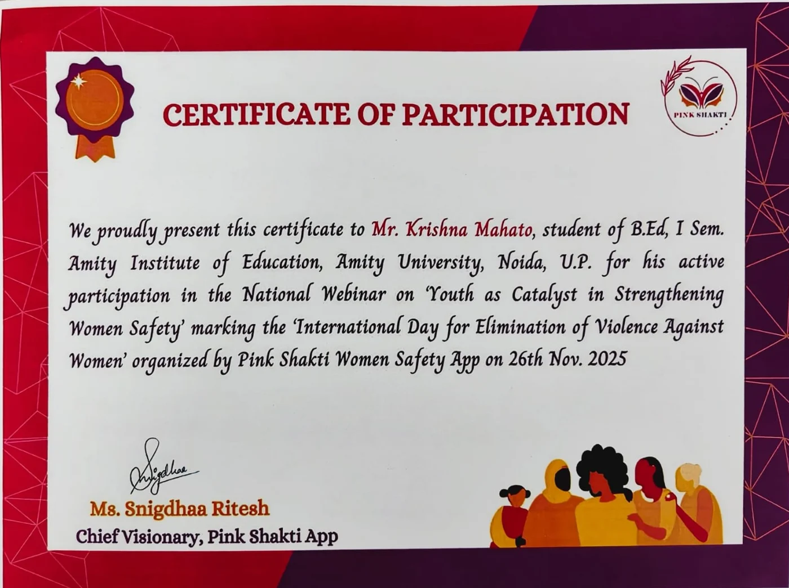
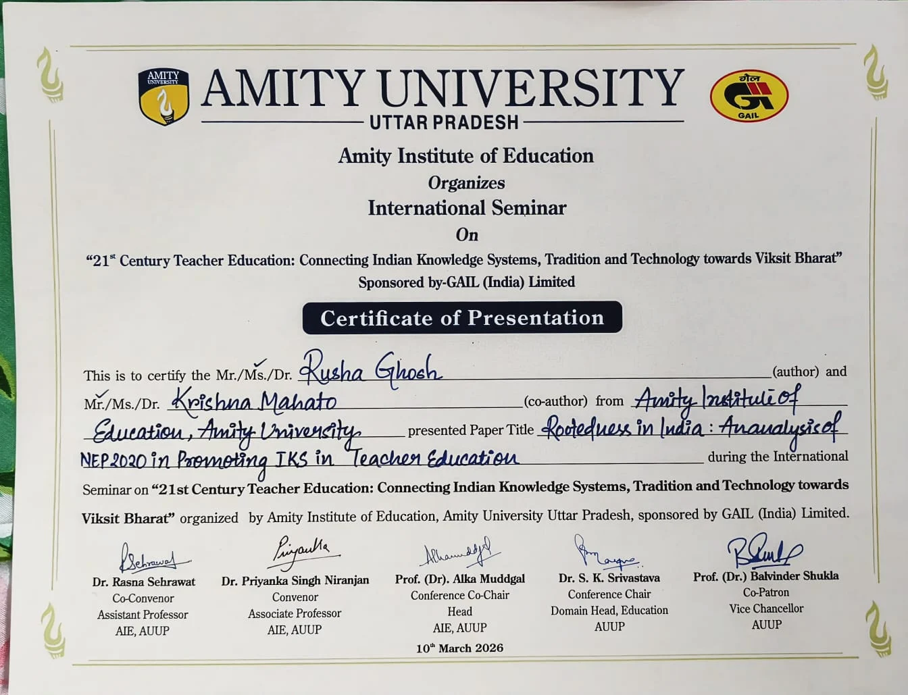
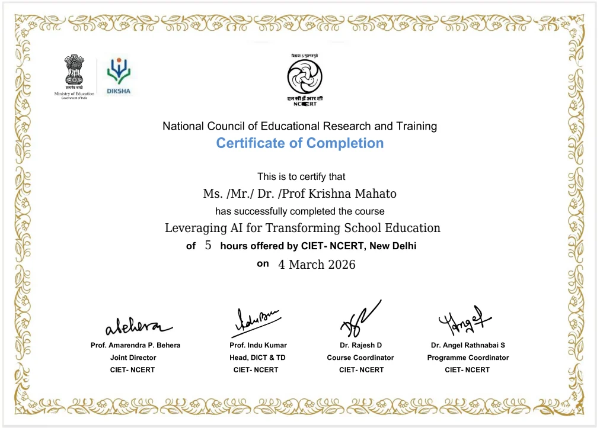
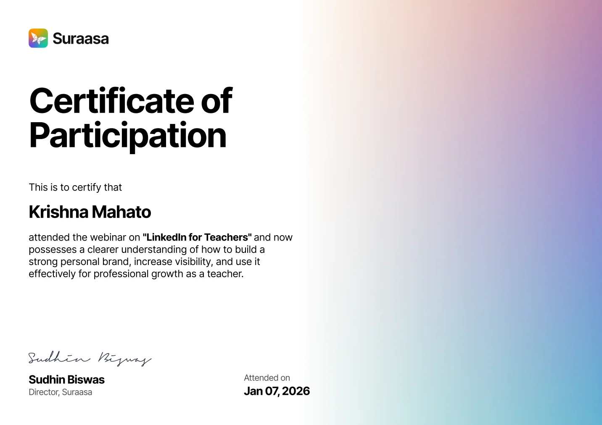

Formal academic qualification
Bachelor of Arts
Degree certificate recording a Bachelor of Arts awarded in 2021 and a CGPA of 8.80.
View Original : Bachelor of ArtsAcademic & professional record
Qualifications, internship completion, professional learning and presentations. Original evidence is available with each record.
8 published records 4 categories
Education and current studiesNo credentials match this search.
Formal academic qualification
Degree certificate recording a Bachelor of Arts awarded in 2021 and a CGPA of 8.80.
View Original : Bachelor of Arts Teaching
TeachingInternship completion
Certificate of completion as an on-ground intern / teacher (80 hours).
View Original : Teaching internship · 80 hours
Professional learningParticipation certificate
Participation in the national webinar on women’s safety (Participant).
View Original : Youth as Catalyst in Strengthening Women Safety
PresentationAcademic presentation
Co-author and presenter on “Rootedness in India: An Analysis of NEP 2020 in Promoting IKS in Teacher Education”.
View Original : Rootedness in India: NEP 2020 & teacher education
Professional learningProfessional learning
Certificate of completion for a five-hour course.
View Original : Leveraging AI for Transforming School EducationProfessional learning
Eight-week course. Consolidated score: 76%; assignments: 25/25; proctored examination: 51/75.
View Original : Effective Writing · NPTEL Elite
Professional learningParticipation certificate
Certificate of participation in the LinkedIn for Teachers webinar.
View Original : LinkedIn for TeachersProfessional learning
Certificate awarded to Krishna Mahato for the knowledge, skills and basic competencies needed to use Google AI in education. Valid through 21 August 2029.
View Original : Gemini Certified Educator